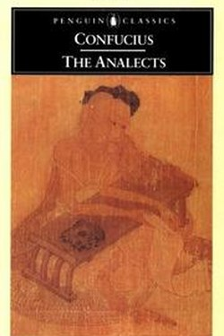

Library › Self-Improvement
The Analects — Summary & Key Lessons

The sayings that built a civilisation: Confucius on learning, loyalty and the lifelong work of becoming human.
📖 OPEN THE FULL INTERACTIVE BREAKDOWN →🌐 Read it in Hindi, Hinglish, Gujarati, Tamil & 22 more languages — free, with audio.
💡 The Big Idea
The Analects are the fragments of Confucius' conversations, collected by his students. His project is ethical self-cultivation: ren (benevolence/human-heartedness), li (ritual and social form), yi (rightness), junzi (the exemplary person). The path: study the classics, practise what you learn, reflect daily, and treat others as you would be treated. His famous pessimism about shortcuts — 'I have never seen anyone who loves virtue as much as beauty' — makes his advice realistic rather than idealistic.
🧠 The 7 Key Lessons
Lesson 1: Learning Is Lifelong
Book 1: The Scholar
Confucius' first lesson: the joy of learning is the joy of a life well spent. He was not a genius; he was a tireless student — 'I am not a man born with knowledge; I love the ancients and study diligently'. The model person studies old wisdom, tests it in practice, and reviews constantly. He even lists the stages: at 15 I set my heart on learning.
📖 Example: The founder who reads everything about past failures before shipping is following the Confucian method. Read the full example →
⚡ Do this: Keep one daily study block, no matter how small — the Analects recommend the habit before the results.
Lesson 2: Practice, Then Reflect
Book 1: The Cycle
The famous opening: to learn and practise it regularly — is that not a joy? For Confucius, knowledge is not memorisation; it is conduct. And reflection has its own clause: thinking without learning is dangerous (it becomes opinion); learning without thinking is useless (it becomes trivia). The cycle is study, practice, and honest review — the same loop as any serious craft.
📖 Example: A student who reads about leadership but never practises leads badly; one who leads without reading repeats old mistakes. Read the full example →
⚡ Do this: After your next learning session, do one practice act and write one line of review.
Lesson 3: The Rectification of Names
Book 12: Language
Confucius' political theory begins with words: things should be called what they are — a father a father, a ruler a ruler. When language is dishonest, trust dies; when words are precise, order is possible. The modern version: clear definitions, honest labels and no euphemism in teams. Vague words create vague behaviour.
📖 Example: A team that calls a delay 'an opportunity' cannot fix it; renaming it 'a 3-week slippage' starts the repair. Read the full example →
⚡ Do this: In your next plan, rename every vague success-word with a measurable definition.
Lesson 4: The Junzi: Character Is the Work
Book 4: The Exemplary Person
The junzi is Confucius' ideal: not the holder of titles but the cultivator of character. The junzi is 'not a vessel' — not a specialist tool — but a whole person; he looks to himself in difficulty and to others in success; he is strict with himself and lenient with others. The modern translation: self-accountability, breadth and grace.
📖 Example: The colleague who checks his own work before anyone else does not need supervision — that self-audit is junzi. Read the full example →
⚡ Do this: Do one self-audit this week before anyone else can: the junior's habit of the senior.
Lesson 5: The Golden Rule, Practically
Book 15: One Word
Asked for one word to live by, Confucius said: reciprocity — 'what you do not wish for yourself, do not do to others.' He adds the generosity clause of the Golden Rule: 'the person of virtue helps others to establish themselves when he wants to establish himself.' The rule is not passive abstention; it is active cultivation of others.
📖 Example: The mentor who teaches everything he knows builds more than the one who guards knowledge. Read the full example →
⚡ Do this: Do one reciprocal act today: help another establish themselves exactly as you would wish to be helped.
Lesson 6: Learning as Joy: The First Word of the Book
Book 1, Chapter 1
The Analects open with what seems like a small line and is actually the whole teaching: 'to learn and in time to practise it — is this not a joy?' For Confucius, learning is a lifelong delight, not a school chore; the student who studies without joy has missed the first lesson. He describes his own life as a seventy-year arc of learning that ended in freedom.
📖 Example: Confucius at seventy: 'I could follow what my heart desired without transgressing' — that freedom was the fruit of decades of joyful study. Read the full example →
⚡ Do this: Reconnect one area of study with pleasure: learn something today purely because it is delightful, with no certificate attached.
Lesson 7: The Gentleman vs the Small Man
Book 4, Chapter 16; Book 2, Chapter 14
The Analects' central distinction: the gentleman (junzi) seeks virtue, the small man seeks gain. Both are ambitious — but the gentleman's ambition is self-cultivation, and the world follows the cultivated person; the small man's ambition is advantage, and his pursuit hollows him. Character, not cleverness, is the difference between the two.
📖 Example: Two students of equal ability: one studies to become better, the other to be seen as better. After ten years, the first has a reputation he never chased. Read the full example →
⚡ Do this: Check the motive of your next big goal: improve the self or impress others? Choose the first, and say so to yourself in writing.
✅ 5-Step Action Plan
- Keep a daily study block; treat it as the base habit.
- After each learning session: one practice act + one review line.
- Rename one vague goal with a measurable definition.
- Run one pre-emptive self-audit weekly.
- Do one establishment-free act of helping another rise.
⚠️ When This Doesn't Work
Confucius' world was hierarchical and patriarchal; 'rectification of names' has been used to enforce social order at the cost of individual rights. Extract the self-cultivation; leave the hierarchy.
💀 The Graveyard Proves It
📷 The Nanda Empire — The Richest Empire in India, Lost Because the King Couldn't Keep a Promise. Burn: An empire of legendary wealth — overthrown in a generation Read the full case study →
💬 Best Quotes from The Analects
- “The man who moves a mountain begins by carrying away small stones.”
- “What you do not wish for yourself, do not do to others.”
- “Learning without thinking is useless; thinking without learning is dangerous.”
Interactive version: mark lessons as read, listen in your language, share quote cards.